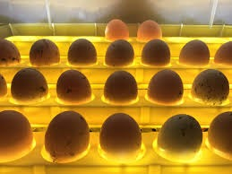
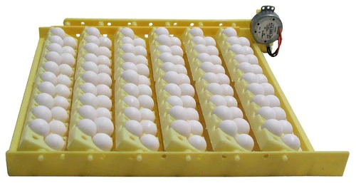
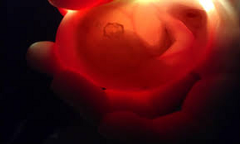
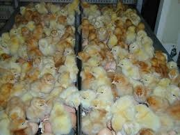

For hatching to occur, the eggs must be fertile. Fertile eggs can be collected from hens who are housed with a rooster. Eggs sold in grocery stores are not fertile; therefore, they will not grow into baby chicks if placed in an incubator. Fertilized eggs usually need to be ordered from a hatchery or from poultry farmers with roosters in their flocks. Eggs usually become fertile about 4 days after the rooster has been introduced to the hens.
Prior to incubation, a fertilized egg can be stored for a maximum of 7 days in a cool room kept at a steady temperature (not in the refrigerator – it’s too cold!). Once the fertilized eggs are placed in the warm incubator, they may develop over the course of 21 days, with the proper incubator set-up and care. Before your baby chicks hatch, be sure to stock up on chick starter feed. A newly hatched chick will need free-choice access to complete feed immediately once they hatch and are placed in the brooder.
Fertile eggs are hatched by using an egg incubator. An incubator is an enclosed structure with a fan and heater to keep eggs warm during the 21-day incubation period. We use incubators with some automatic features, such as egg turning (which is critical to chick development and to keep the chick from sticking to the inside surface of the shell) and a fan to facilitate even heat distribution.
Prepare the incubator about one week prior to the arrival of fertilized eggs. Wash it with a 10 percent bleach solution, followed by warm soapy water and a thorough rinse to ensure you’re starting with a sanitized environment. Once the incubator is clean and dry, turn it on and check to be sure a constant temperature and humidity level will be maintained. Then, place the incubator in an area where ambient temperatures are steady, with no risk of draft.
Temperature and humidity inside the incubator are critical factors for successfully hatching eggs. Suggested guidelines are as follows:
- Optimum temperature: 38.055556 degrees Celsius
- Temperature range: 37.2222 - 38.8889 degrees Celsius
- Don’t let temperature drop below 37.2222degrees Celsius
- Do not allow temps of 38.8889 degrees Celsius to last more than a few hours
- Double-check the incubator’s thermometer with a medical thermometer placed nearby to ensure the gauge is working properly.
- Relative humidity, day 1-17: 50-55 percent
- Equivalent to a wet bulb temperature of 29.4444 - 30.5556 degrees Celsius
- Keep water channels in the incubator full to facilitate proper humidity
- Relative humidity, day 18-21: On day 18, raise the relative humidity to 70 percent
- Use a hygrometer to ensure humidity levels are correct throughout the incubation period
- Only open the incubator when necessary – doing so can let heat and humidity escape and can affect the success of the hatch
- Increase ventilation as embryos grow bigger, especially from days 18-21.
Day 1: Setting eggs
Once the incubator is set-up and has analyzed the settings to ensure accuracy, you are ready to place the eggs inside the incubator. This process is called “setting the eggs.”
The number of chicks that hatch together is especially important for the newborn chicks because chickens are flock animals and need companions to be happy. Place the eggs in the egg tray of the incubator, with the larger end facing up and the narrow end facing down in the incubator. Set the temperature to 38.055556 degrees Celsius with 50-55 percent humidity.
Day 1-18: Turning the eggs
After setting the eggs, the incubation process begins. An important part of this process is turning, or rotating, the eggs. Eggs must be physically turned to prevent the developing chick from sticking to the shell. More scientifically, the embryo should be resting on top of the yolk. The yolk tends to float upward, on top of the albumen (egg white) towards the shell if the egg is not turned. As a result, the developing embryo can be squeezed between the yolk and the shell, causing potentially fatal damage. By turning the eggs, the yolk turns within the albumin, once again moving the yolk away from the shell and making it safe for the embryo on top until it is time to turn again.
Eggs are turned a minimum of 3 times per day, and 5 times is even better. Our automatic incubators, turn the eggs and eliminate the need to repeatedly open the incubator.
Days 7-10: Candling eggs
Towards the middle of the incubation period at 7 to 10 days, eggs are candled to determine if the embryos are growing properly. Candling is the act of simply shining a light through an egg. White and light-colored shells are the easiest to candle, while darker shells will require a brighter light. The simplest way to candle an egg is with a basic flashlight, but there are specialized pieces of equipment designed specifically for the job. We do not keep the egg out of the incubator for more than 5-10 minutes, and we don’t candle the eggs all at once. To allow the eggs to stay inside the incubator, we plan to candle a few at a time.
- If the inside of the egg is clear - that is, free from visible structures or dark areas - the egg is infertile, or the embryo died very early so we remove this egg from the incubator.
- If a ring of red is visible within the egg, there was an embryo at some point, but it has died and we remove this egg from the incubator.
- If we see blood vessels within the egg, there is a live embryo inside. Blood vessels in chicken eggs are normally observable within 7 to 10 days of an egg's incubation. By 18 days of incubation, the embryo takes up most of the egg and appears as a dark area within the egg. There is sometimes movement inside the egg.
- If we notice broken or leaking eggs, they are removed from the incubator as they are not likely to be viable and may contaminate the incubator. After candling, we return the eggs to the incubator and return to the day 1-18 turning schedule.
Days 18-21: Pre-hatching
By day 18, the embryo has developed into a chick and will take up most of the space in the egg. The chick is preparing to hatch. We do a few things to best help the baby chick prepare: First we stop egg-turning at day 18 with the larger end of the egg facing up. At this point, the chick will position itself for hatching inside the egg.
We also maintain a temperature of 38.055556 degrees Celsius but increase humidity to 70 percent.
Day 21: Baby chicks start hatching
Chicks will typically hatch at day 21. If the fertilized eggs were cooled prior to incubation, the process might take a little longer. If at day 21 with no hatch, we give the eggs a few more days.
When the big day comes, we always let the chick hatch on its own. Blood vessels that haven’t dried up yet may still attach the shell to the chick, and prematurely pulling off the shell can cause excessive, potentially fatal, bleeding. A chick can take up to 24 hours to completely hatch, although 5-7 hours is more common. The peeping of the new baby chicks will encourage unhatched eggs to also start hatching. When the chicks have all hatched, the incubator temperature is lowered to 35 Celsius. Once the chicks have dried, they are moved into the brooder, which should already be up and running with a temperature of 32.2222-35 Celsius. Food and water should be in place as well.
If there are still unhatched eggs at day 21, it is possible that timing or temperature went slightly awry, so we give the eggs until Day 23. We candle any unhatched eggs to see if they are still alive before discarding them.
Most of our incubation is done in machines but occasionally, we will get a customer order for natural incubation. In natural incubation the broody hen must be large healthy and preferably vaccinated and with a good brooding and mothering record. Signs of broodiness are;
-ruffled her feathers
-spread wings
-loose appetite, brood sounds etc
Brooding may be induced with dummy eggs or even stones
The incubation period for chicken is 20-21 days and increases up to 30days for other poultry. Eggs incubator machines have very initial and controlled inputs to maintain optimum temperatures of 380c and moisture levels of about 60-80% or relative humidity.
Factors to consider for incubation hatch:
- Eggs must not be kept for more than 7 days
- Eggs must be fully fertilized
- Should be free from external parasites
- Should be kept at temperatures between 120c and 140c at a high humidity between 75 and 85%
- Should be tested for fertility after one week of incubation